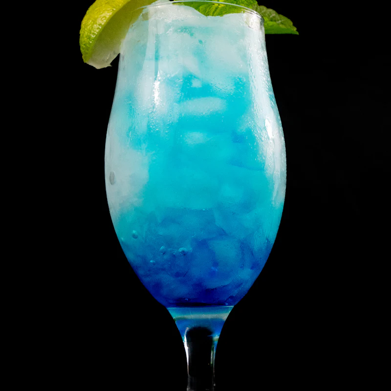
Eisbachblau
Apfel, Limette, Spirulina. Natürlich blau, ganz ohne Farbstoff.
ab 3,90 €0,3 l · 0,5 l · Pouch
Schlotz di glücklich.
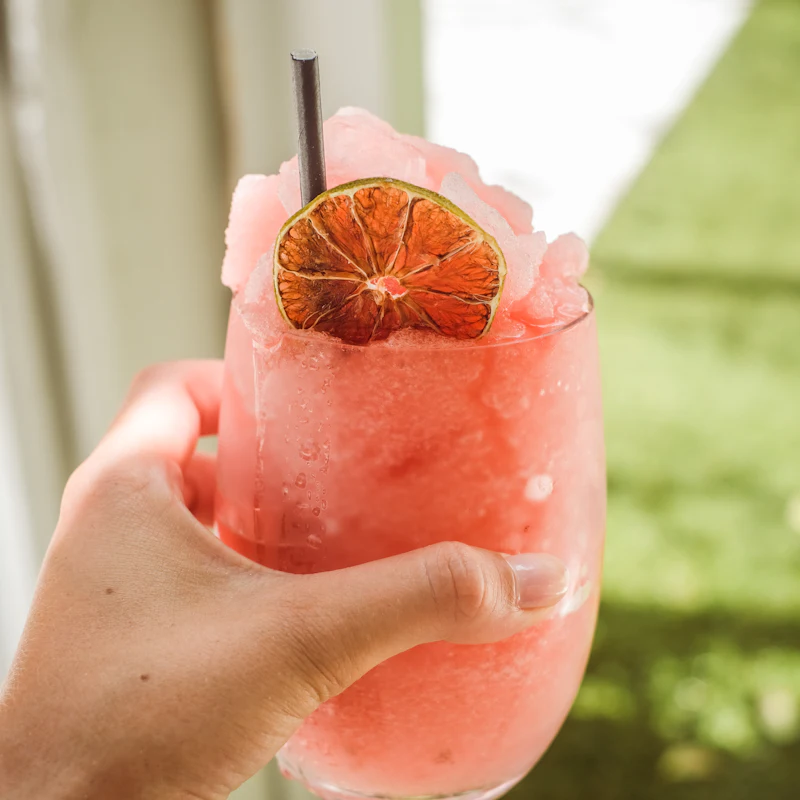
Sechs feste Sorten, zwei für die Saison. Jede hat ihre eigene Sticker-Farbe, damit du am Standl sofort weißt, wo's langgeht.

Apfel, Limette, Spirulina. Natürlich blau, ganz ohne Farbstoff.
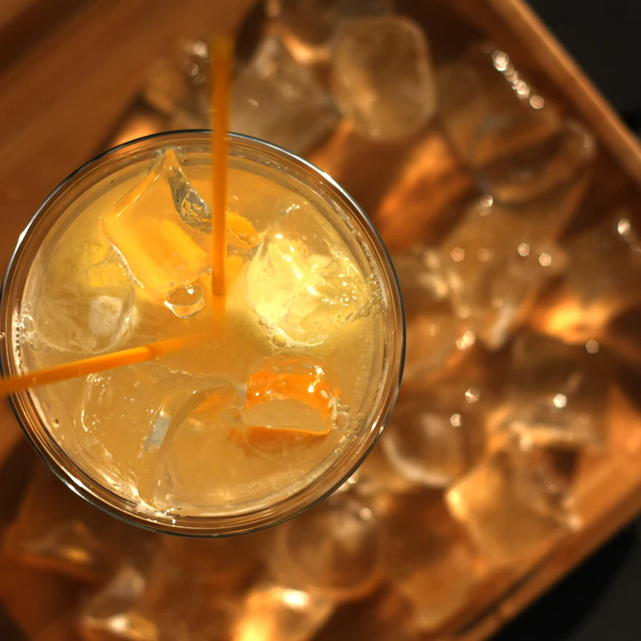
Zitrone aus Sizilien, Ingwer. Unsere allererste Sorte vom Flaucher.
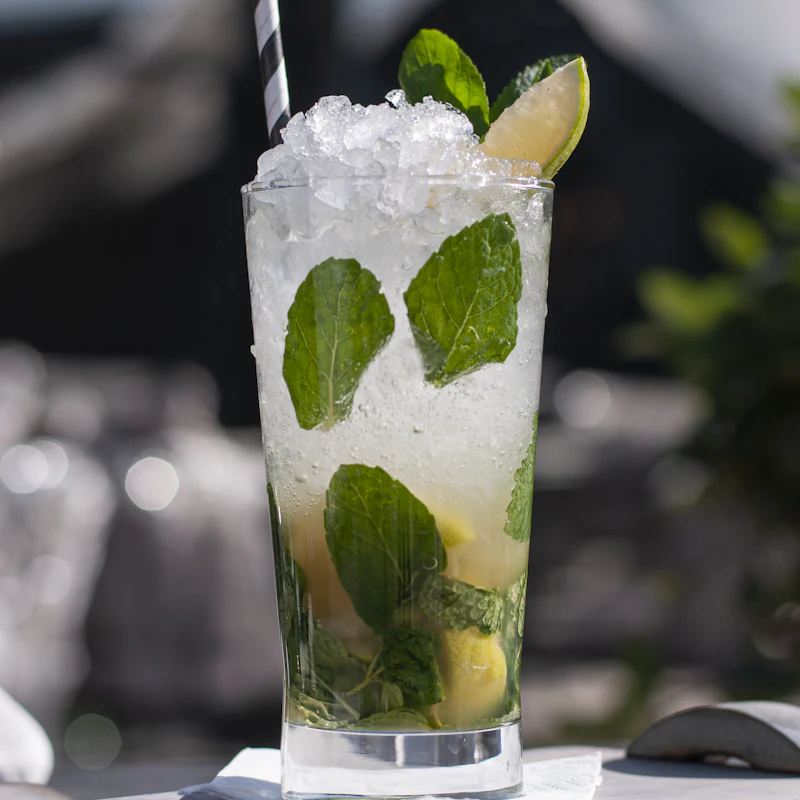
Holunderblüte, Minze, Gurke. Meistverkauft im Biergarten.
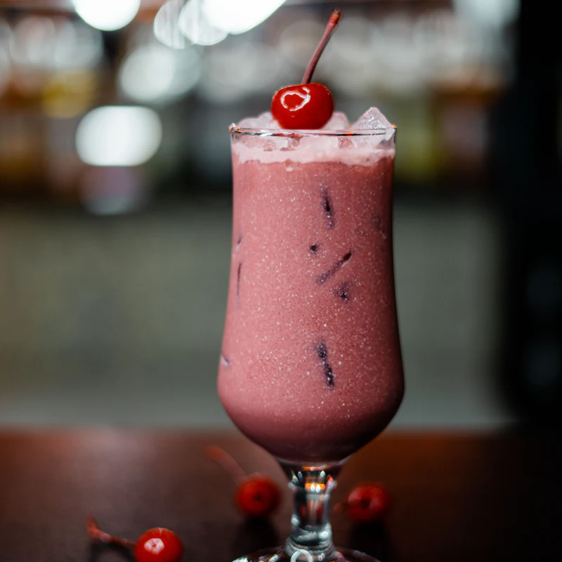
Sauerkirsche, Rote Bete. Etwas herb, und genau deshalb so beliebt.
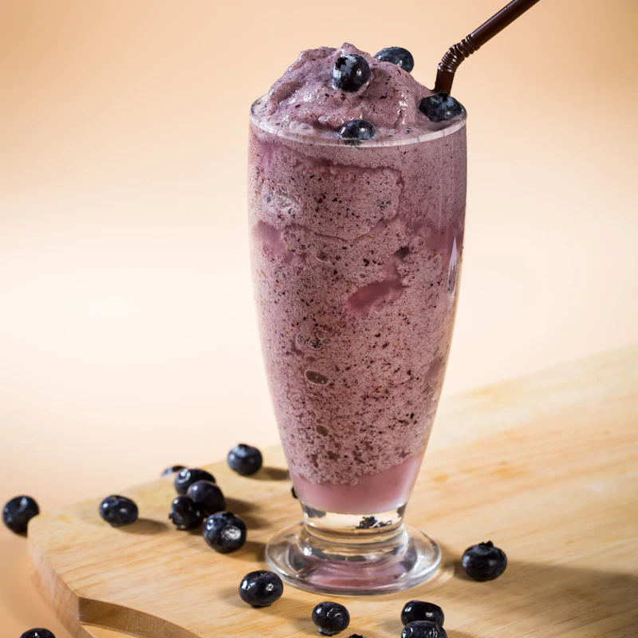
Blaubeere, Basilikum. Klingt komisch, schmeckt nach mehr.
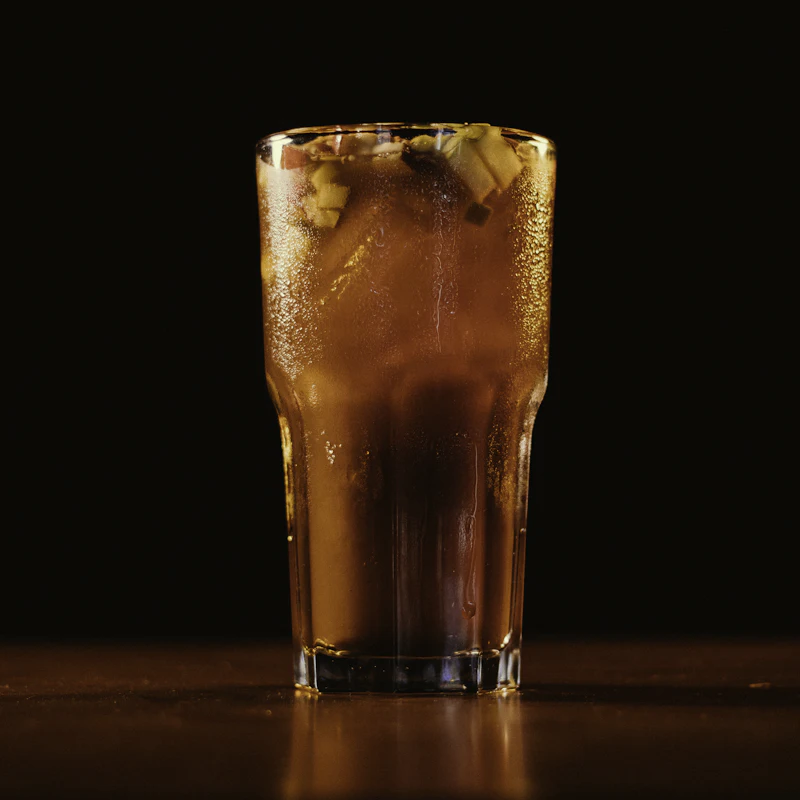
Pfirsich, Schwarztee. Leicht koffeinhaltig, für den zweiten Wind am Nachmittag.
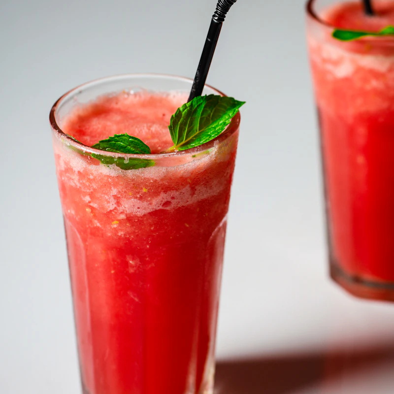
Wassermelone, Limette. Nur im Hochsommer, solang's heiß ist.
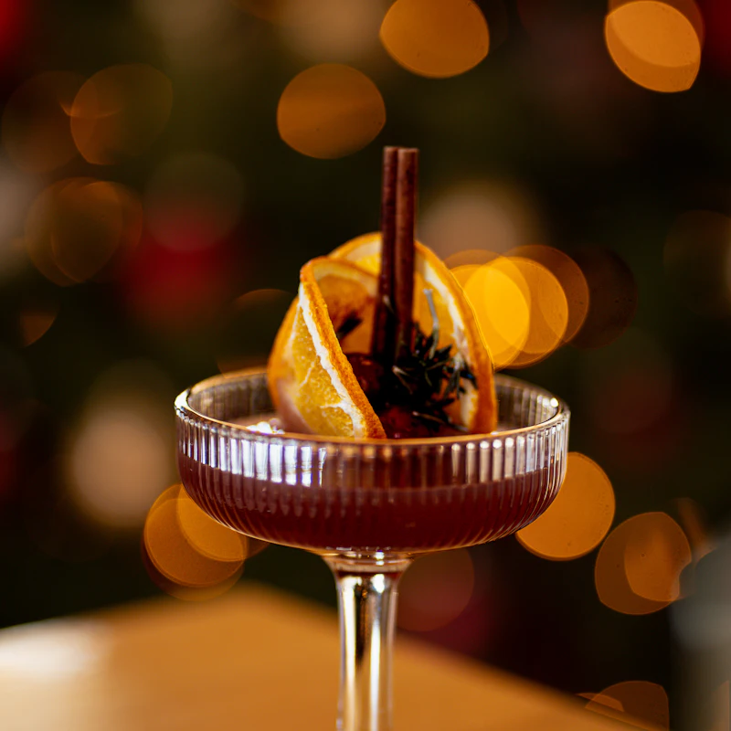
Apfel, Orange, Zimt. Heiß statt gefroren, für die Christkindlmärkte.
Alle Sorten vegan, ohne künstliche Farbstoffe, max. 5,9 g Zucker pro 100 ml.
2019 standen wir mit einem Lastenrad am Flaucher. Nach drei Stunden war alles weg. Heute schlotzt halb München mit.
Lena hat in Weihenstephan Lebensmitteltechnologie studiert und sich über Slush geärgert, der nach Farbstoff schmeckt. Ihr Mitbewohner Tarik hatte die Idee mit dem Rad. In der WG-Küche in der Au haben die beiden 37 Rezepte getestet, bis die Isar-Zitrone saß.
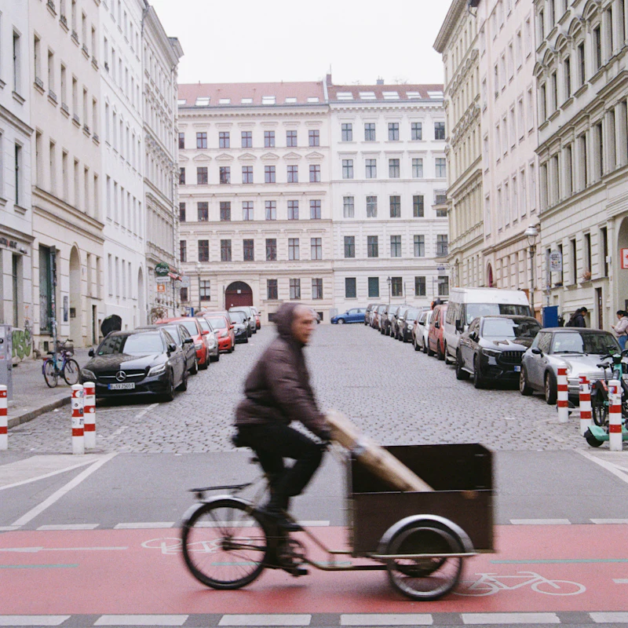
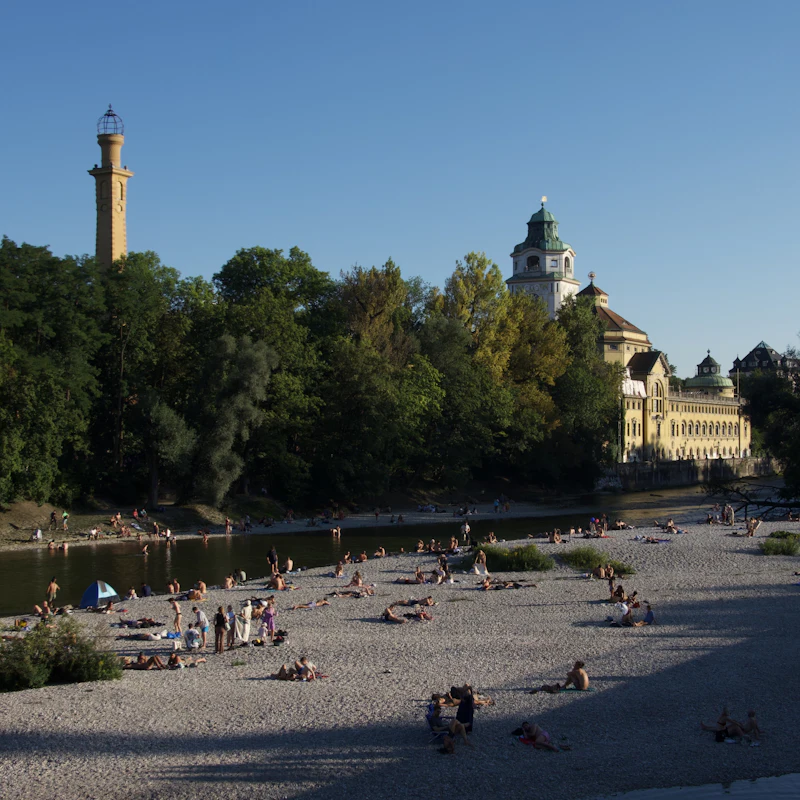
Vier eigene Standl an der Isar, im Englischen Garten und im Westpark. Dazu Cafés, Spätis und Freibad-Kioske in der ganzen Stadt.
… und rund 110 weitere Läden zwischen Pasing und Trudering. Dein Laden fehlt? Hier lang.
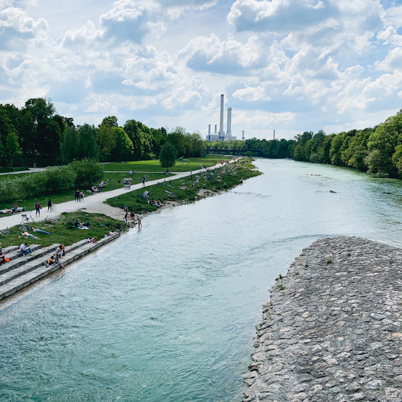
Isarauen, Höhe Flaucher
April – Sept.: täglich 11 – 20 Uhr. Bei Regen zu.
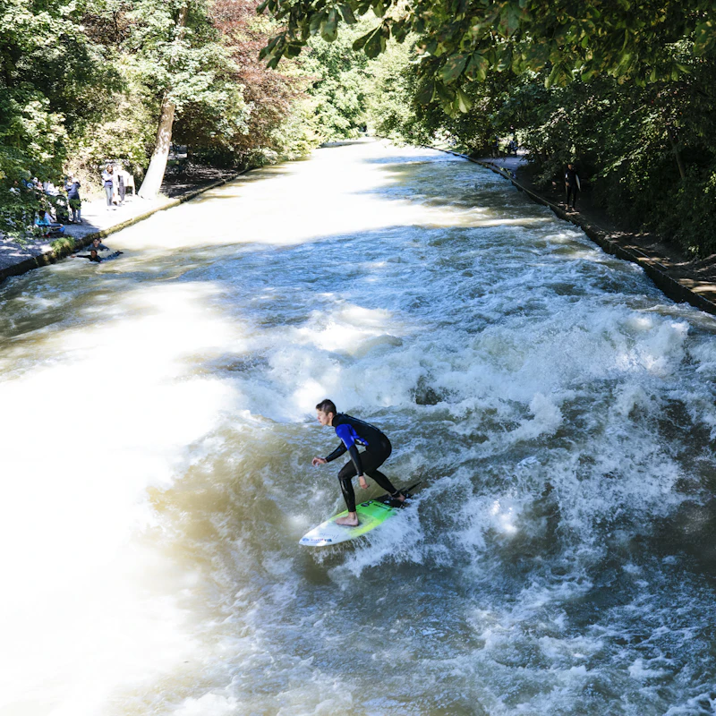
Südende Englischer Garten
April – Sept.: täglich 11 – 21 Uhr.
Westpark, nahe Seebühne
April – Sept.: Mi – So 12 – 20 Uhr.
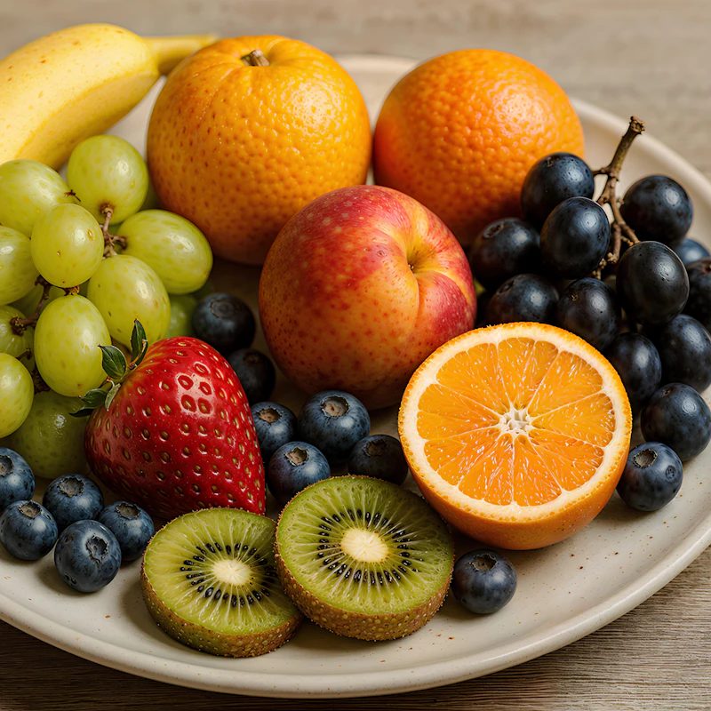
Obergiesing, direkt an der Manufaktur
Ganzjährig: Mo – Sa 10 – 18 Uhr.
Acht Köpfe aus der Manufaktur in Obergiesing. Jede und jeder mit Lieblingssorte, einer davon mit vier Pfoten.
Gründerin, Produkt und Rezepte
Lebensmitteltechnologin aus Rosenheim, hat jede Sorte selbst entwickelt.
Gründer, Geschäftsführung
Aufgewachsen in Neuperlach. Kümmert sich um Zahlen, Partner und das Lastenrad, wenn es mal wieder quietscht.
Leitung Manufaktur
Gelernte Konditorin, hält die Maschinen auf exakt −4 °C.
Vertrieb Gastro und Handel
Kennt gefühlt jeden Späti zwischen Schwabing und Sendling.
Marke und Social Media
Designerin, verantwortlich für Sticker, Becher und den Instagram-Kanal.
Logistik
Fährt die Kühltransporter und plant die Touren durch die Stadt.
Standl-Leitung
Koordiniert die vier Standl und die Sommer-Aushilfen.
Büromaskottchen
Französische Bulldogge von Vroni, offiziell zuständig für gute Laune.
Ob Freibad, Biergarten oder Späti: Wir liefern Konzentrat, Maschine und Becher. Du zapfst.
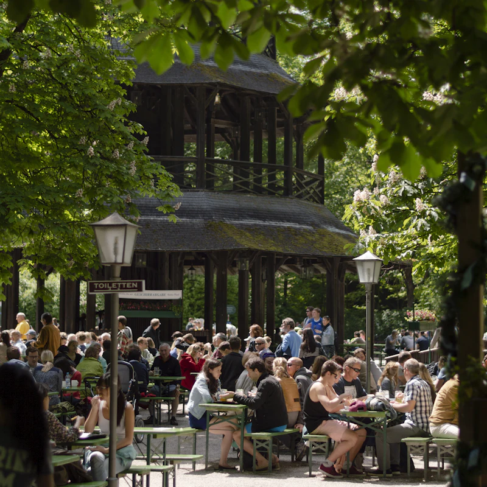
Konzentrat
5-l-Bag-in-Box, ergibt rund 80 Becher à 0,3 l. Lieferung einmal pro Woche.
Maschine
Leihen wir dir für die Saison, Wartung aus der Manufaktur inklusive.
Becher
Pfandbecher mit Logo. Wir holen sie wieder ab und spülen.
„Seit wir SCHLOTZ zapfen, fragt am Beckenrand keiner mehr nach dem blauen Zeug vom Rummel.“
Kiosk am Weiher, Freibad-Kiosk„Holler-Minz läuft bei uns an heißen Tagen fast so gut wie Spezi.“
Biergarten Zum Schwan, Pasing„Maschine steht, Lieferung kommt pünktlich, den Rest macht die Sonne.“
Radl-Café Speiche, SchwabingBewirb dich ohne Anschreiben. Ein paar Sätze über dich und deine Lieblingssorte reichen.